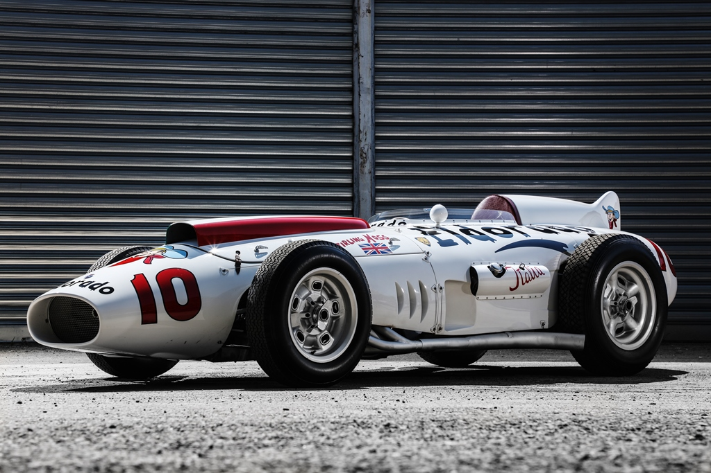
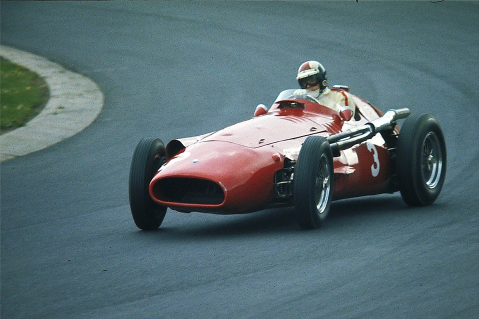
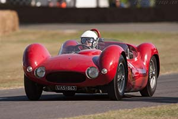
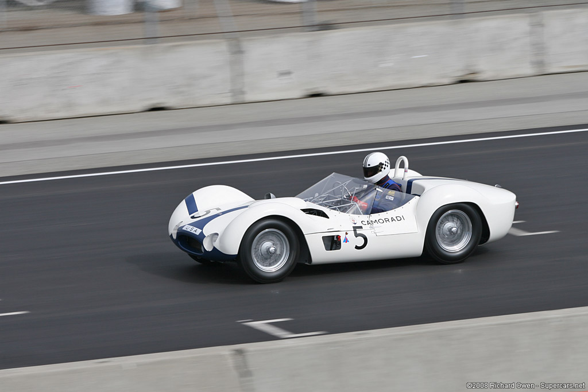

Un prototype de la Maserati MC20, la nouvelle supercar Maserati, rendra hommage à Stirling Moss, l'as britannique des courses automobiles décédé le 12 avril à l'âge de 90 ans.
Le design utilisé pour ce prototype est emprunté à la Maserati Eldorado, l'emblématique monoplace conduite à ses débuts à Monza en 1958 par Stirling Moss lui-même, au «Trofeo dei due Mondi». 
Il est tout à fait approprié que la marque Trident ait choisi la date du 13 mai pour rappeler le grand pilote britannique, car il ne fait aucun doute que sa victoire au Grand Prix de F1 de Monaco le 13 mai 1956, au volant de la Maserati 250F, tient parmi les nombreux trophées de la collection du champion.  Ce fut une victoire incroyable, puisque Moss a mené la course du premier au dernier des 100 tours autour du circuit sinueux et exigeant de Monaco. La journée de triomphe de Maserati s'est terminée en prenant également la troisième place - également en 250F - du pilote français Jean Behra.
Moss, qui a enregistré 16 victoires en 66 départs en Grand Prix de Formule 1, est l'un des pilotes les plus titrés à n'avoir jamais remporté le titre mondial. Sir Stirling s'est retrouvé à plus d'une occasion dans une moustache de la couronne, terminant deuxième à quatre reprises et troisième en trois championnats. Pour cette raison, il était connu comme le "roi sans couronne". Au cours de la saison 1956 et de certaines courses de 1957, Moss a conduit une Maserati 250F («sa préférée», comme il se souvient souvent), battu uniquement par Juan Manuel Fangio. De plus, le rival argentin de Moss a remporté son titre en 1957 au volant d'une autre 250F, confirmant la fiabilité et la supériorité de la voiture de Modène.
À travers ce prototype MC20 avec la "signature" de Stirling Moss, Maserati souhaite commémorer l'un des plus grands noms des annales du sport automobile mondial, qui a écrit certaines des plus belles pages de sa propre histoire de course. La liste des voitures Maserati conduites par le conducteur britannique comprend également les Tipo 60 Birdcage, Tipo 61 et 300 S.  Le choix d'un prototype du MC20 à dédier à Sir Stirling n'est pas un hasard: à travers ce modèle, la marque Trident vise à souligner sa vocation sportive, et surtout revenir à un rôle de premier plan sur les circuits de course, après le dernier championnat du monde remporté en 2010 avec une autre voiture extraordinaire, la MC12.
L'arrivée du MC20 est un événement important pour la société basée à Modène, non seulement en raison du retour en course, mais aussi parce qu'elle sera la première voiture à adopter un nouveau moteur 100% conçu, développé et produit par Maserati elle-même.
Sir Stirling Moss aurait certainement aimé la nouvelle MC20: une voiture qui incarne pleinement les valeurs les plus vraies de Maserati en termes de performances, de plaisir de conduite et de contenus innovants exprimés de manière superlative dans tous les modèles de la marque Trident.
Le choix d'un prototype du MC20 à dédier à Sir Stirling n'est pas un hasard: à travers ce modèle, la marque Trident vise à souligner sa vocation sportive, et surtout revenir à un rôle de premier plan sur les circuits de course, après le dernier championnat du monde remporté en 2010 avec une autre voiture extraordinaire, la MC12.
L'arrivée du MC20 est un événement important pour la société basée à Modène, non seulement en raison du retour en course, mais aussi parce qu'elle sera la première voiture à adopter un nouveau moteur 100% conçu, développé et produit par Maserati elle-même.
Sir Stirling Moss aurait certainement aimé la nouvelle MC20: une voiture qui incarne pleinement les valeurs les plus vraies de Maserati en termes de performances, de plaisir de conduite et de contenus innovants exprimés de manière superlative dans tous les modèles de la marque Trident.